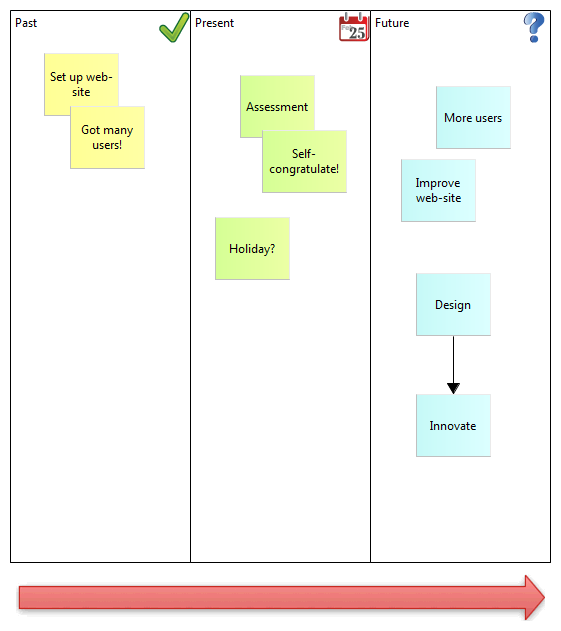

Quand la boîte de dialogue du gestionnaire d'images "Mes images" apparaît, cliquez sur l'option "Ouvrir à partir d'un fichier..." et choisissez l'image appropriée dans le système de fichier de votre ordinateur. Faites de même pour les autres blocs.


Les composants et les concepts principaux qui constituent un canevas sont les blocs, les magnets, les images, les connexions, les astuces et les verrous. Un modèle de canevas comporte typiquement un certain nombre de blocs (verrouillés) et des images sur lesquels les utilisateurs peuvent ajouter des magnets, des images, des connexions et d'autres blocs si nécessaire. Les sections suivantes décriront chacun de ces concepts en détail en commençant par une description de la palette du canevas et par un exemple de construction d'un canevas fictif.
Quand on travaille avec un canevas, la palette vous propose les outils dont vous avez besoin pour créer ces éléments.

La palette du canevas
Choisissez un outil dans la palette et tirez-le dans le canevas. Les rectangles colorés représentent des "Magnets". Notez que vous n'êtes pas limité aux couleurs fournies et que vous pouvez modifier la couleur de votre magnet dans la fenêtre des prprpiétés. De la même façon, vous pouvez modifier le type de trait et de la pointe de la flèche dans la fenêtre des propriétés.
Suivons le processus de construction d'un cavenas destiné à cartographier des concepts passés, présents et futurs.
Supposons que vous avez choisi un modèle dans l'arborescence des modèles, suivez ces trois étapes:
Ajout des astuces et verrouillage
Pour la touche finake, ajoutons quelques astuces aux blocs puis verrouillons-les de façon à ce que nous puissions réutiliser le canevas en tant que modèle. Pourquoi vouloir ajouter des astuces aux blocs ? Et bien, comme pour les autres éléments des modèles Archi, il est extrêment utile de fournir une rubrique qui renseigne l'utilisateur final quant à la finalité de l'élément et sur la façon dont il peut être utilisé dans le modèle. Ajoutons les astuces:

Maintenant que nous avons créé les blocs, ajouté une image, fourni les astuces et verrouillé les éléments, nous pouvons enregistrer l'ensemble en tant que modèle de canevas puis créer de nouvelles instances de canevas à partir de ce modèle. Voir les sections Enregistrer un canevas en tant que modèle" et
"Créer un nouveau canevas à partir d'un modèle" pour ce faire.
Créer d'une nouvelle instance de canevas à partir d'un modèle signifie que nous pouvons commencer à l'utiliser pour de bon:
Notre canevas imaginaire
Pour plus d'idées, voir comment les modèles de canevas pré-fabriqués sont construits pour plus d'exemple. Voir la section Création d'un nouveau canevas à partir d'un modèle".
 Archi utilise un format de fichier différent pour les fichiers "*.archimate" quand on ajoute des canevas qui contiennent des images.
Archi utilise un format de fichier différent pour les fichiers "*.archimate" quand on ajoute des canevas qui contiennent des images.
En temps normal, Archi enregistre les fichiers "*.archimate" en tant que fichier texte au format XML. Cependant, quand des images sont utilisées dans un canevas, le format de fichier utilisé est un fichier binaire d'archive (format zip) qui contient à la fois le fichier XML du modèle et tous les fichiers des images. Ceci afin de conserver ensemble tous les fichiers liés en s'assurant que vous n'avez pas à vous soucier de gérer les fichiers des images.